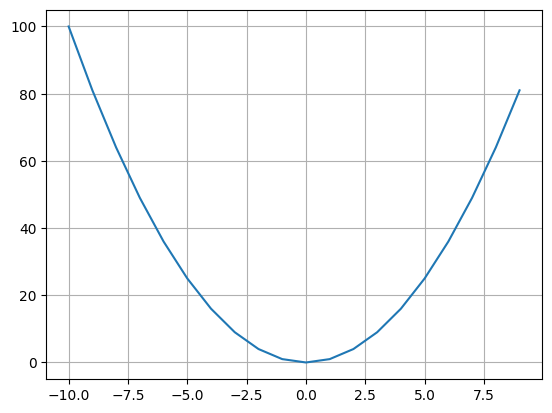
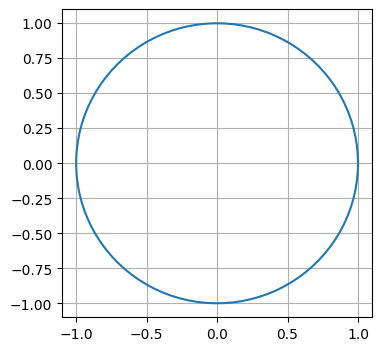
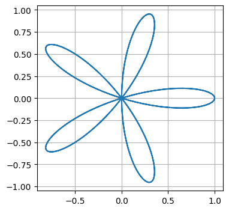

1 + 23Type an expression and press Shift + Enter to execute the cell.
1 + 23Python is a very simple language, yet very powerful.
print("hello, wolrd!")hello, wolrd!1 + 23x = 1
y = 2
x + y3x = 1
print(x)
x = "hello"
print(x)1
helloWhile variables do not have types associated with them, the values do have types and Python is very strict about them.
1 + "2"--------------------------------------------------------------------------- TypeError Traceback (most recent call last) Cell In[7], line 1 ----> 1 1 + "2" TypeError: unsupported operand type(s) for +: 'int' and 'str'
# invalid python program
x = 1
y = 2
x + yCell In[8], line 4 y = 2 ^ IndentationError: unexpected indent
marks = 50
if marks > 35:
print("pass")
else:
print("fail")passAnother example:
numbers = [1, 2, 3, 4]
for n in numbers:
print(n)
print("done")1
2
3
4
doneSum of square of all even numbers below one million.
sum([n*n for n in range(1000000) if n%2 == 0])166666166667000000!head /usr/share/dict/wordsA
AA
AAA
AA's
AB
ABC
ABC's
ABCs
ABM
ABM's!wc -l /usr/share/dict/words104334 /usr/share/dict/wordsCan you find the largest word in the dictionary?
max([3, 4, 5, 8, 2])8max(["one", "two", "three", "four", "five"])'two'max(["one", "two", "three", "four", "five"], key=len)'three'max(open("/usr/share/dict/words"), key=len)"electroencephalograph's\n"How to find the top 5 words?
sorted(open("/usr/share/dict/words"), key=len)[-5:]['counterrevolutionaries\n',
"counterrevolutionary's\n",
"electroencephalogram's\n",
'electroencephalographs\n',
"electroencephalograph's\n"]This requires a library called requests. You can install it by running:
!python -m pip install requestsRequirement already satisfied: requests in /home/anand/.rye/py/cpython@3.12.3/lib/python3.12/site-packages (2.32.3)
Requirement already satisfied: charset-normalizer<4,>=2 in /home/anand/.rye/py/cpython@3.12.3/lib/python3.12/site-packages (from requests) (3.3.2)
Requirement already satisfied: idna<4,>=2.5 in /home/anand/.rye/py/cpython@3.12.3/lib/python3.12/site-packages (from requests) (3.7)
Requirement already satisfied: urllib3<3,>=1.21.1 in /home/anand/.rye/py/cpython@3.12.3/lib/python3.12/site-packages (from requests) (2.2.2)
Requirement already satisfied: certifi>=2017.4.17 in /home/anand/.rye/py/cpython@3.12.3/lib/python3.12/site-packages (from requests) (2024.7.4)import requests
url = "https://api.github.com/search/repositories"
params = {
"q": "ISI Bangalore"
}
data = requests.get(url, params=params).json()data.keys()dict_keys(['total_count', 'incomplete_results', 'items'])data['total_count']4data['items'][0]{'id': 832589430,
'node_id': 'R_kgDOMaBOdg',
'name': 'isi-fcp',
'full_name': 'anandology/isi-fcp',
'private': False,
'owner': {'login': 'anandology',
'id': 7569,
'node_id': 'MDQ6VXNlcjc1Njk=',
'avatar_url': 'https://avatars.githubusercontent.com/u/7569?v=4',
'gravatar_id': '',
'url': 'https://api.github.com/users/anandology',
'html_url': 'https://github.com/anandology',
'followers_url': 'https://api.github.com/users/anandology/followers',
'following_url': 'https://api.github.com/users/anandology/following{/other_user}',
'gists_url': 'https://api.github.com/users/anandology/gists{/gist_id}',
'starred_url': 'https://api.github.com/users/anandology/starred{/owner}{/repo}',
'subscriptions_url': 'https://api.github.com/users/anandology/subscriptions',
'organizations_url': 'https://api.github.com/users/anandology/orgs',
'repos_url': 'https://api.github.com/users/anandology/repos',
'events_url': 'https://api.github.com/users/anandology/events{/privacy}',
'received_events_url': 'https://api.github.com/users/anandology/received_events',
'type': 'User',
'site_admin': False},
'html_url': 'https://github.com/anandology/isi-fcp',
'description': 'Course respository for the Fundamentals of Computing and Programming at ISI Bangalore',
'fork': False,
'url': 'https://api.github.com/repos/anandology/isi-fcp',
'forks_url': 'https://api.github.com/repos/anandology/isi-fcp/forks',
'keys_url': 'https://api.github.com/repos/anandology/isi-fcp/keys{/key_id}',
'collaborators_url': 'https://api.github.com/repos/anandology/isi-fcp/collaborators{/collaborator}',
'teams_url': 'https://api.github.com/repos/anandology/isi-fcp/teams',
'hooks_url': 'https://api.github.com/repos/anandology/isi-fcp/hooks',
'issue_events_url': 'https://api.github.com/repos/anandology/isi-fcp/issues/events{/number}',
'events_url': 'https://api.github.com/repos/anandology/isi-fcp/events',
'assignees_url': 'https://api.github.com/repos/anandology/isi-fcp/assignees{/user}',
'branches_url': 'https://api.github.com/repos/anandology/isi-fcp/branches{/branch}',
'tags_url': 'https://api.github.com/repos/anandology/isi-fcp/tags',
'blobs_url': 'https://api.github.com/repos/anandology/isi-fcp/git/blobs{/sha}',
'git_tags_url': 'https://api.github.com/repos/anandology/isi-fcp/git/tags{/sha}',
'git_refs_url': 'https://api.github.com/repos/anandology/isi-fcp/git/refs{/sha}',
'trees_url': 'https://api.github.com/repos/anandology/isi-fcp/git/trees{/sha}',
'statuses_url': 'https://api.github.com/repos/anandology/isi-fcp/statuses/{sha}',
'languages_url': 'https://api.github.com/repos/anandology/isi-fcp/languages',
'stargazers_url': 'https://api.github.com/repos/anandology/isi-fcp/stargazers',
'contributors_url': 'https://api.github.com/repos/anandology/isi-fcp/contributors',
'subscribers_url': 'https://api.github.com/repos/anandology/isi-fcp/subscribers',
'subscription_url': 'https://api.github.com/repos/anandology/isi-fcp/subscription',
'commits_url': 'https://api.github.com/repos/anandology/isi-fcp/commits{/sha}',
'git_commits_url': 'https://api.github.com/repos/anandology/isi-fcp/git/commits{/sha}',
'comments_url': 'https://api.github.com/repos/anandology/isi-fcp/comments{/number}',
'issue_comment_url': 'https://api.github.com/repos/anandology/isi-fcp/issues/comments{/number}',
'contents_url': 'https://api.github.com/repos/anandology/isi-fcp/contents/{+path}',
'compare_url': 'https://api.github.com/repos/anandology/isi-fcp/compare/{base}...{head}',
'merges_url': 'https://api.github.com/repos/anandology/isi-fcp/merges',
'archive_url': 'https://api.github.com/repos/anandology/isi-fcp/{archive_format}{/ref}',
'downloads_url': 'https://api.github.com/repos/anandology/isi-fcp/downloads',
'issues_url': 'https://api.github.com/repos/anandology/isi-fcp/issues{/number}',
'pulls_url': 'https://api.github.com/repos/anandology/isi-fcp/pulls{/number}',
'milestones_url': 'https://api.github.com/repos/anandology/isi-fcp/milestones{/number}',
'notifications_url': 'https://api.github.com/repos/anandology/isi-fcp/notifications{?since,all,participating}',
'labels_url': 'https://api.github.com/repos/anandology/isi-fcp/labels{/name}',
'releases_url': 'https://api.github.com/repos/anandology/isi-fcp/releases{/id}',
'deployments_url': 'https://api.github.com/repos/anandology/isi-fcp/deployments',
'created_at': '2024-07-23T10:25:25Z',
'updated_at': '2024-10-13T18:59:50Z',
'pushed_at': '2024-10-13T19:00:21Z',
'git_url': 'git://github.com/anandology/isi-fcp.git',
'ssh_url': 'git@github.com:anandology/isi-fcp.git',
'clone_url': 'https://github.com/anandology/isi-fcp.git',
'svn_url': 'https://github.com/anandology/isi-fcp',
'homepage': 'https://anandology.github.io/isi-fcp/',
'size': 2867,
'stargazers_count': 6,
'watchers_count': 6,
'language': 'C',
'has_issues': True,
'has_projects': True,
'has_downloads': True,
'has_wiki': True,
'has_pages': True,
'has_discussions': True,
'forks_count': 0,
'mirror_url': None,
'archived': False,
'disabled': False,
'open_issues_count': 0,
'license': None,
'allow_forking': True,
'is_template': False,
'web_commit_signoff_required': False,
'topics': [],
'visibility': 'public',
'forks': 0,
'open_issues': 0,
'watchers': 6,
'default_branch': 'main',
'score': 1.0}data['items'][0]['full_name']'anandology/isi-fcp'for repo in data['items']:
print(repo['full_name'])anandology/isi-fcp
isibangculturalcommittee/isibangculturalcommittee.github.io
MathClubISIB/mathclubisib.github.io
sudiptarakshit/ML-Modules-ISILet’s put all of this together.
import requests
url = "https://api.github.com/search/repositories"
params = {
"q": "hyperbolic geometry language:python"
}
data = requests.get(url, params=params).json()
for repo in data['items']:
print(repo['full_name'])cduck/hyperbolic
evfro/HyperbolicRecommenders
Eloind/Hyperbolic-Geometry
yankai-chen/LKGR
tjweisman/geometry_tools
Labardini/Hyperbolic-GeometPy
mountain/hyperbolic-wythoff
ya-wei-eileen-lin/HyperbolicDiffusionDistance
nunukim/explore_hyperbolic_geometry
nbubis/Poincare
trevorBajkowski/hyperbolicPoincareDiskGeometry
TinfoilHat0/Hyperbolic-Generator
hdbray/hyperbolic_geometry
calwoo/hyperbolic
JWKennington/pyperbolic
stla/PyMobiusHyperbolic
MonkeyUnderMountain/PopularizeGeometry
asahidari/gyrovector_hyperbolic_b3d
DRWardrope/TFGeoTests
drewitz/VIPer
zbovaird/UHG-Library
LuckyGirl-XU/STGN
Rajwrita/Poincare-Embeddings
AnoushkaVyas/HyperCode
BStandage/CuttingSequence
mountain/sunspot
url = "https://api.frankfurter.app/latest"
params = {"base": "USD", "symbols": "INR"}
requests.get(url, params=params).json(){'amount': 1.0, 'base': 'USD', 'date': '2024-10-11', 'rates': {'INR': 84.07}}data = requests.get(url, params=params).json()
data['rates']['INR']84.07https://en.wikipedia.org/wiki/Rose_(mathematics)
A rose is the set of points in polar coordinates specified by the polar equation
\(r=a\cos(k\theta )\)
or in Cartesian coordinates using the parametric equations
\[ \displaystyle {\begin{aligned}x&=r\cos(\theta )=a\cos(k\theta )\cos(\theta )\\y&=r\sin(\theta )=a\cos(k\theta )\sin(\theta )\end{aligned}} \]
We need numpy and matplotlib. You can install them by running:
!python -m pip install numpy matplotlibimport numpy as np
import matplotlib.pyplot as pltx = np.arange(-10, 10)xarray([-10, -9, -8, -7, -6, -5, -4, -3, -2, -1, 0, 1, 2,
3, 4, 5, 6, 7, 8, 9])y = x*xyarray([100, 81, 64, 49, 36, 25, 16, 9, 4, 1, 0, 1, 4,
9, 16, 25, 36, 49, 64, 81])plt.plot(x, y)
plt.grid()
angles = np.linspace(0, 2*np.pi, 100)np.linspace(1, 10, 5)array([ 1. , 3.25, 5.5 , 7.75, 10. ])r = 1theta = np.linspace(0, 2*np.pi, 100)
x = r * np.cos(theta)
y = r * np.sin(theta)plt.figure(figsize=(4, 4))
plt.plot(x, y)
plt.grid()
Now let’s try rose curves.
k = 5
a = 1
theta = np.linspace(0, 2*np.pi, 1000)
r = a * np.cos(k*theta)
x = r * np.cos(theta)
y = r * np.sin(theta)
plt.figure(figsize=(4, 4))
plt.plot(x, y)
plt.grid()
!pip install sympyDefaulting to user installation because normal site-packages is not writeable
Requirement already satisfied: sympy in /home/anand/.local/lib/python3.10/site-packages (1.12)
Requirement already satisfied: mpmath>=0.19 in /home/anand/.local/lib/python3.10/site-packages (from sympy) (1.3.0)from sympy import *x, y = symbols("x y")x\(\displaystyle x\)
y\(\displaystyle y\)
a = 2*x + 3* y + 2 a\(\displaystyle 2 x + 3 y + 2\)
diff(sin(x))\(\displaystyle \cos{\left(x \right)}\)
a = diff(sin(x)*exp(x), x)a\(\displaystyle e^{x} \sin{\left(x \right)} + e^{x} \cos{\left(x \right)}\)
integrate(a, x)\(\displaystyle e^{x} \sin{\left(x \right)}\)